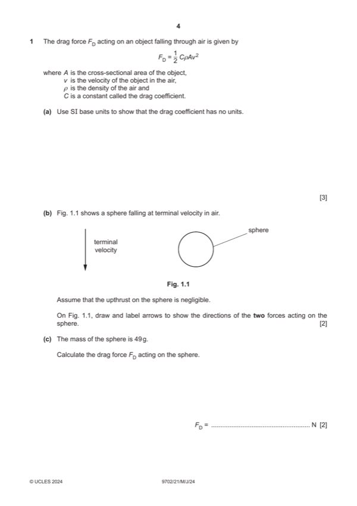
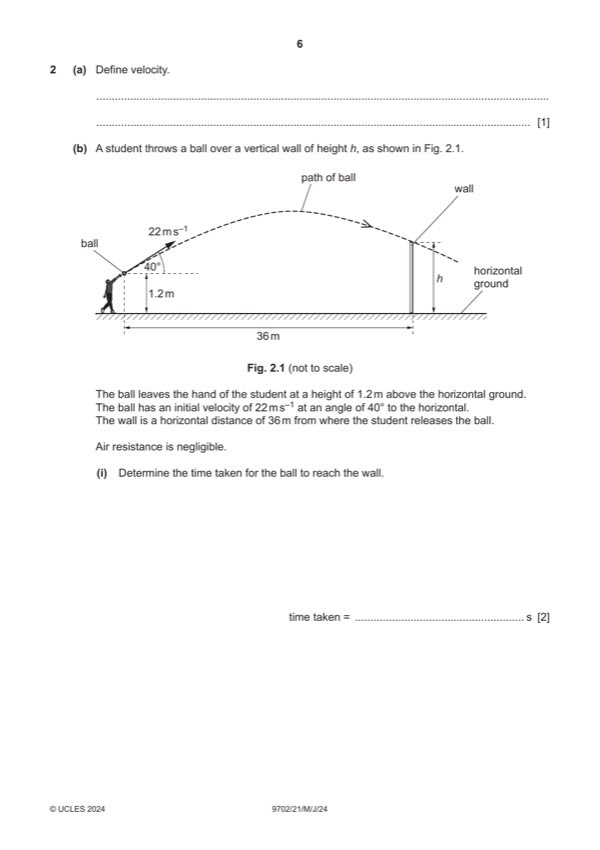
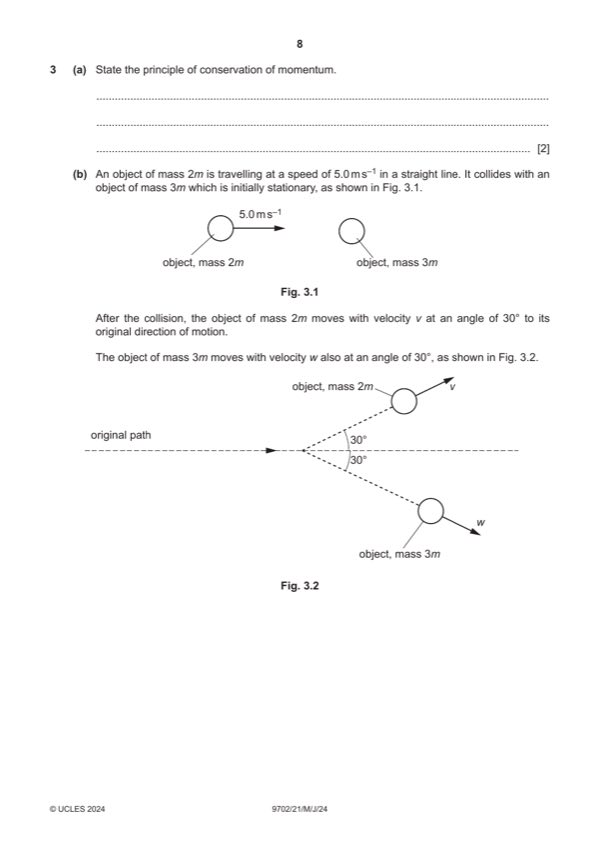
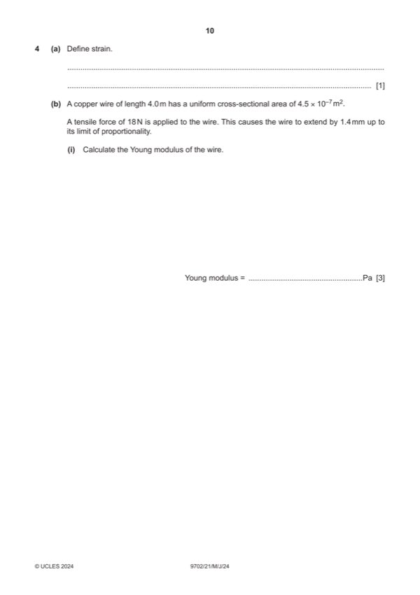
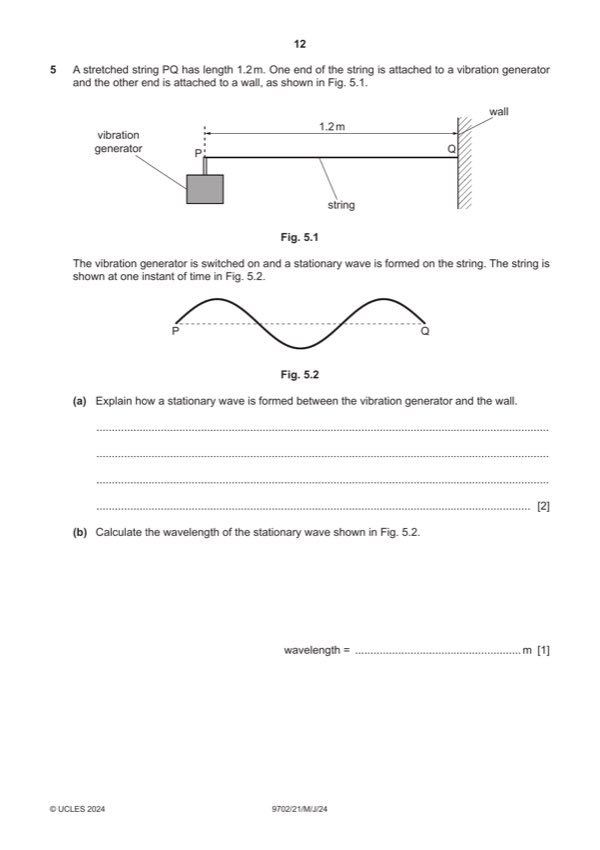
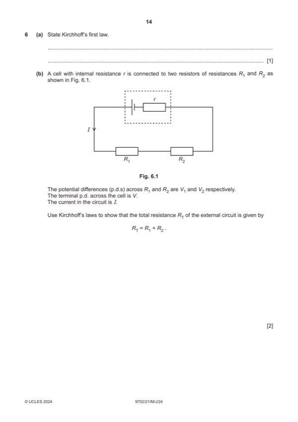
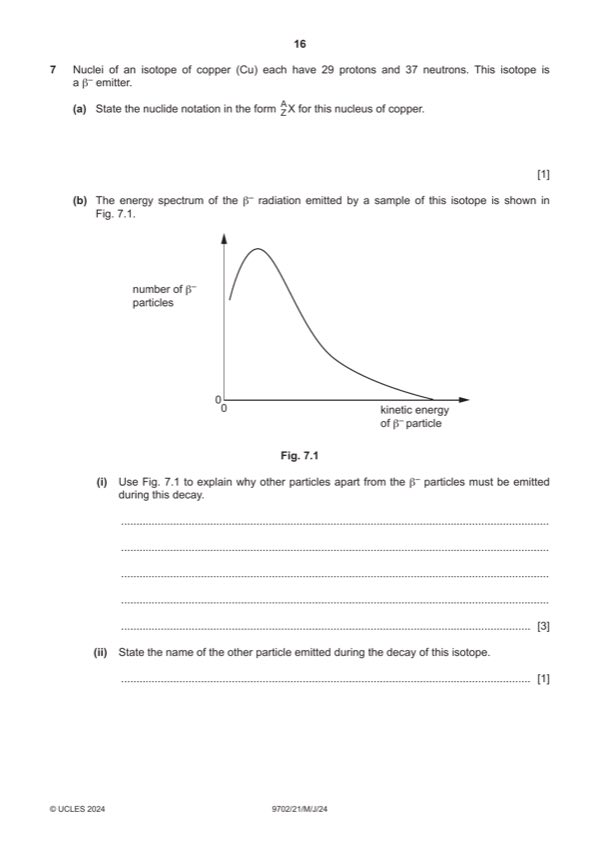

Question 0
Part 0 — solution
- [B1] Obtain/use: third term correct ( 0 e )
Mark points
- [B1] Obtain/use: third term correct ( 0 e )
Step-by-step solutions based on the mark scheme (not a mark-scheme dump).
Part 0 — solution

Part 1(a) — solution
Part 1(b) — solution
Part 1(c) — solution
Part 1(d) — solution

Part 2(a) — solution
Part 2(b)(i) — solution
Part 2(b)(ii) — solution
Part 2(b)(iii) — solution
Part 2(b)(iii) — solution

Part 3(a) — solution
Part 3(b) — solution
Part 3(c) — solution
Part 3(c) — solution

Part 4(a) — solution
Part 4(b)(i) — solution
Part 4(b)(ii) — solution
Part 4(c) — solution
Answer: B2

Part 5(a) — solution
Part 5(b) — solution
Part 5(c) — solution
Part 5(d) — solution
Part 5(e) — solution

Part 6(a) — solution
Part 6(b) — solution
Part 6(c) — solution
Part 6(d)(i) — solution
Part 6(d)(ii) — solution

Part 7(b)(i) — solution
Part 7(b)(ii) — solution
Part 7(b)(iii) — solution
Part 29 — solution
Answer: B1
Part 29 — solution